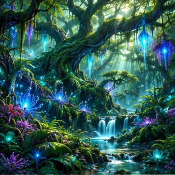

✦ · Posvátný tvor
Piluin
Potvrzený kánonModrozelená srst a listy, dvě tykadla se zářivými kuličkami, špičatá ouška. Nemá ocas.
Výskyt: ŞivrűaEncyklopedie · fauna a flóra
Každá bytost i rostlina má svůj příběh. Kánon a návrhy zůstávají přehledně oddělené.
✦ Průvodce světem
Projekty zvířat s pracovním českým popisným jménem zatím nedostávají neověřený název v Nyvarë.
Modrozelená srst a listy, dvě tykadla se zářivými kuličkami, špičatá ouška. Nemá ocas.
Výskyt: ŞivrűaNávrh spojení parasaurolopha, leguána a kosmana; druhové jméno v Nyvarë zatím nestanoveno.
Výskyt: ŞivrűaNávrh kombinující výra a havrana. Anatomie a domovský biom čekají na rozhodnutí.
Výskyt: NeurčenoKoncept inspirovaný vydrou, chobotnicí a tučňákem pro oceánský biom.
Výskyt: AqçuarïnInspirace harpyjí, vakoveverkou a kaloněm. Bioluminiscence je návrhem.
Výskyt: LuravaiKoncept tvořený motivy fenka a trnorepa; finální podoba čeká na schválení.
Výskyt: ShaqaarPracovní koncept · Şivrűa
Kombinace guavy, orchideje duch a açaí; čistě bílý květ a fialovo-tyrkysové plody jsou vizuálním návrhem.
Pracovní koncept · Şivrűa
Koncept uklidňující rostliny. Jméno v Nyvarë a účinky ještě nebyly uzavřeny.
Pracovní koncept · Neurčeno
Koncept rostliny měnící zbarvení podle emocí držitele; pravidla a botanický profil čekají na schválení.